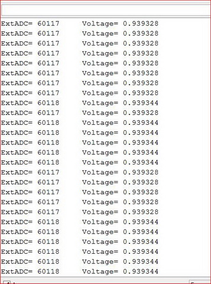
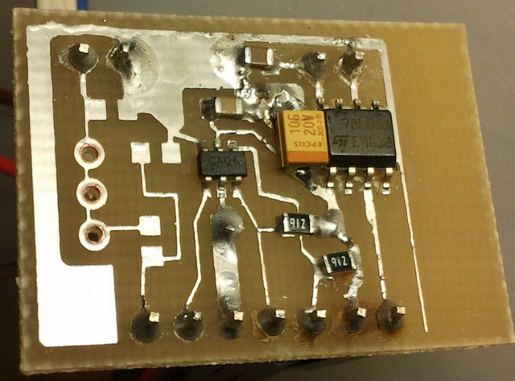
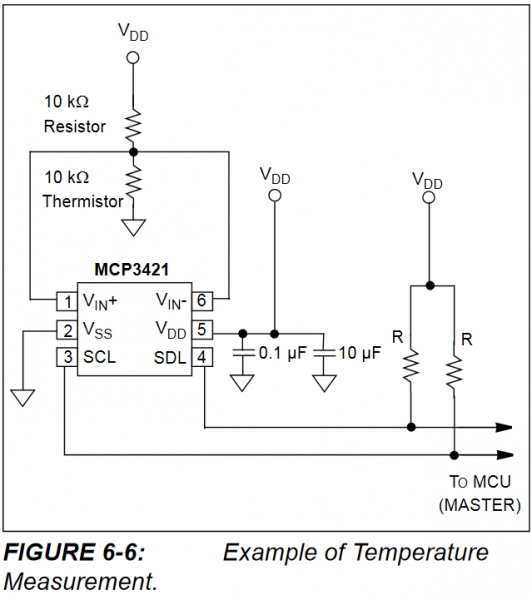

Прикупил букашку сигма-дельта АЦП MCP3421, в корпусе sot23-6 Опорное напряжение встроенное 2.048в точность 0,05%. Для дифф измерения разрядность -18 бит. Для обычного измерения разрядность - 17 бит, и входное 0.. 2,048в Соответственно 1 LSB примерно 15uV. АЦП умеет усиливать входной сигнал в 2,4,8 раз. Питается от 2,7..5,5в. Обвеса никакого не требует, только блокировочная ёмкость по питанию и подтяжка шины. АЦП аппаратно поддерживает режимы 12,14,16,18 бит. Работает медленно, - скорость 240; 60; 15; 3,75 SPS (отсчётов в секунду) соответственно битности. Но работает очень хорошо, после SAR АЦП меги -это просто сказка. Девиация счёта всего (х +1) LSB, и это без всяких усреднений и программной обработки. И то в зависимости как попадёшь меж границами. Подкруткой многооборотника удавалось добиться выдачи стабильно-одинаковых показаний. На фото -типовое чтение, напряжение гуляет всего на 15 микровольт.

Правда источник напряжения для тестов у меня бесшумный -батарейка и многооборотный переменник для регулировки напряжения с неё. С реальными сигналами конечно счёт будет сильнее болтаться. Тестовая платка запитана от внешнего аккумулятора и собственного стабилизатора на 78l05 для минимизации возможных помех. ( не запаянные элементы -под входной делитель) 
Программа: в скетче не стал вводить отслеживание факта обновления данных счёта, т.е. если запрашивать АЦП на каждом круге loop то будет регулярно выдавать уже считанные ранее данные. ( напомню на 18 битах обновление данных в регистрах всего 3,75 раза в секунду)
05 | Wire.beginTransmission(0x68); |
07 | Wire.endTransmission(); |
11 | Wire.requestFrom(0x68,3); |
12 | long value= ((Wire.read()<<8) | Wire.read()); |
13 | value= ((value<<8)| Wire.read()); |
14 | Serial.print ("ExtADC= "); |
15 | Serial.print(value); Serial.print(" Voltage= "); |
16 | float voltage = value * 2.048 /131072 ; |
17 | Serial.println(voltage,6); |
удобная АЦП, если разрядность нужна большая. И главное мало выводов. Я такой использовал ADC121S021(12бит) в своих железках.
Выложи, пожалуйста схему с комментариями. Закажу компоненты, буду паять.
"Букашка" стоит, как две атмеги8. Это омрачает.
спасибо dimax. давно купил на али много MCP3421 на всяк случай (если что, для контроля последовательных АКБ, последовательных солнечных панелей) что-то получилось очень дёшево рублей 30-50. Дело встало в опторазвязке, и изготовлении многообмоточного DC-DC для развязки по питанию.
Черкни пожалуйста здесь на будущее, как их вцепить впараллель по I2С (05
Wire.beginTransmission(0x68);//i2c адрес MCP3421= B1101000 ) -Должен же быть адрес в шине от 0-7 ?adrusha, подключение подробно расписано в даташите
slider, увы, они не паралелятся на шине, адрес зашит жёстко.
slider: >> Дело встало в опторазвязке, и изготовлении многообмоточного DC-DC для развязки по питанию.>>
Питайте прямо от ячеек аккумуляторов или от солнечных панелей. У вас уже есть то что вам надо, идеальный случай.
А вот данные от ваших " коробочек" развязывайте оптронами. Или радио. Или Serial, или VirtualWire .... Или по проводам или через 433 (Они-же в одну сторону пойдут) или NRF24L01 или на esp8266 , с вебом, да ещё и с графиками.
dimax, не подскажите где mcp3421 можно быстро взять? Поисковики не дали ни одного места, где можно купить сегодня или завтра :-( по приемлимой цене. Влучшем случае 3 дня.
nik182, прямо сразу -вряд ли, вещь не ходовая. Я в митраконе брал, 120руб. Но там тоже будут со склада подвозить.
Адрес зашит да, жёстко, но для параллельной работе по шине нужно брать с соответствующей маркировкой - т.е. в названии чипа указан адрес из 8 возможных, которые устанавливаются производителем.
Диапазон адресов А0-А7, соответственно маркировка MCP3421A0 - MCP3421A7
А почему делим на
131072? Ведь когда в 17 разрядах "1", это соответствует числу131071!mihleb, по этому вопросу, правда, применительно к 10 битной разрядности (1024 или 1023) регулярно бывают жаркие споры. Каждый в итоге остаётся при свом мнении. Но, для справки, в примерах от Атмела везде 1024. Хотя я сам сторонник делить на 1023 ;)
Согласен. Но это легко проверяетсяю При входном напряжении 2.048в, т.е. равном опорному, выходной код будет 131071, согласны? Тогда и делить надо на это число для получения верного результата. Хотя погрешность будет, конечно, мизерной...
Вы его температурой не пытали?
На странице 22 в даташите по MCP3421 наличествует вот такая схема:

Я в полной растерянности: как оно может что-то измерять, когда оба "измерительных" входа замкнуты друг на друга?
a5021, какое-то недоразумение видимо. Заглянул в даташит от микрочипа и от фарнел -там нормальные схемы.
Вот же гадость! Никак я не мог допустить, что у них на сайте лежат разные доки на один и тот же чип. Я разглядывал версию от 2006-го года и там упомянутая мной чепуха наличествовала. По любому, благодарю за внесенную ясность.
Почитал, почитал и дай думаю прикуплю. В целом неплохо, линейность и смещение нуля порадовали. Но ошибка шкалы большая,
Gain Error (Note 6) --- 0.05(typ) --- 0,35% (max) PGA = 1, DR = 3.75 SPS. При 2.000В на входе, мой намерял 1.995В, т.е. -0.25%.
Выставил 2.046 вольта на источнике, MCP3421 намерял 2.040. 6 милливольт -- это для моих целей слишком большая ошибка. Думал будет хотя бы 1мв, но пришлось обломаться.
Уф Уф, а ведь поначалу внимания не обратил, а у меня такая же ерунда. В первом сообщении у вас значения повторяются, 28/28/28/44/44/44/44/28/28 ведь ацп такой точный, как так выходит, я бы понял, если бы было бы 28/29/43/30/28/43, но ведь нет, они повторяются, как так? При том при сем понимаю, что это не из-за того, что в порт вы чаще отправляете данные, чем сам ацп считывает ибо у вас есть 1 место 44/28/44
AVS, девиация оцифровки в 15µV, куда ещё точнее??
тут дело не в точности, а как раз таки в повторе значений, у меня такая ерунда была и есть при измерении внутреннего напряжения на МК, специально делаю, чтобы напряжение падало, и записываю значение в еепром, но в итоге получается, что скачки могут быть до 0,2 в, тьо есть 2.12 в 2,12/2,12/2,12, а потом рехзко 1,98 1,98 1,98 и тд, то есть так быть не должно, поидее. Вот собираю сейчас устройство на этом ацп дабы проверить верность измерения
ну и дело здесь не в округлении никаком, разбивал на 2 байта число, полученное напрямую от ацп, такая же ерунда
AVS, этот "повтор значений" обусловлен математической кратностью минимальному отсчёту АЦП. Девиация счёта в 1 LSB даёт в данном случае шаг 2.048/131072=0,000015625 вольта который и видем на картинке. Для понимания сколь мало это значение - у АЦП меги это число выше примерно в 1..2 тысячи раз.
ну тут в принципе да, получается, что так оно и есть..а у меня то почему так , если даже в 2 тр это 0,03125 в...ладно, приду домой, еще раз все проверю
1я пытался, как сделать, чтобы клд заработаля?
3 полученных бита это 3 части одного целого числа?
@Как видно из диаграммы на рис.5, результат измерения представлен в трех байтах: В первом байте 7 старших бит соответствуют знаку результата измерения (если эти биты равны 0, то знак “+”, если 1 – то знак “-“). Младший бит первого байта соответствует старшему биту результата измерения, а его младшие биты располагаются во 2 и 3 байтах. Таким образом, из 18 значащих бит получаемых от микросхемы результат измерения занимает 17 бит, а знак результата – 1 бит.@
вот что есть в интернете, но я не пойму, сначала написано, что за знак отвечаюьт аж 7 бит из байта, а в конце пишут, что за знак отвечает лишь один бит..не понимаю, как получить число и в последствии вольтаж то?
AVS, всё просто, чип оперирует целыми байтами, поэтому в случае отрицательного значения все "лишние" биты в старшем байте заполняются единицами в полном соответствии с системой хранения отрицательных чисел. Как получить вольтаж -дан пример в топике.
Наверно сабж действительно неплох. А я се ads1115 взял. Тоже дельта-сигма на i2c, впечатления в целом аналогичные. И младший разряд не скачет. Отличия помелочам конечно есть - 16 бит, но зато 860 SPS и 4 канала.
Да уж, а я и не зжаметил, что вы еще и код выкладывали...вот как можно быть таким невнимательным...спасибо)
Наверно сабж действительно неплох. А я се ads1115 взял. Тоже дельта-сигма на i2c, впечатления в целом аналогичные. И младший разряд не скачет. Отличия помелочам конечно есть - 16 бит, но зато 860 SPS и 4 канала.
Где это такие цены. На али они оба в раене 2-3 баксов на плате https://ru.aliexpress.com/item/16-Bit-I2C-ADS1115-Module-ADC-4-channel-with-Pro-Gain-Amplifier-for-Arduino-RPi-1PCS/32817162654.html?spm=a2g0v.10010108.1000014.1.733d2711fuTpYI&scm=1007.13338.98644.000000000000000&scm_id=1007.13338.98644.000000000000000&scm-url=1007.13338.98644.000000000000000&pvid=a6fb1040-b0bc-4b68-a041-5843f9da7ac0&_t=pvid%3Aa6fb1040-b0bc-4b68-a041-5843f9da7ac0%2Cscm-url%3A1007.13338.98644.000000000000000 https://ru.aliexpress.com/item/MCP3421-I2C-SOT23-6-delta-sigma-ADC-Evaluation-Board-For-PICkit-Serial-Analyzer-Module/32850739713.html?spm=a2g0v.search0204.3.38.1ee313847Wsb7X&ws_ab_test=searchweb0_0,searchweb201602_3_10152_10151_10065_10344_10068_5722815_10342_10343_10340_5722915_10341_5711416_5722615_10696_10084_10083_10618_10307_5722715_5711215_10059_308_100031_10103_5711515_10624_10623_10622_5711315_5722515_10621_10620_10125,searchweb201603_2,ppcSwitch_4_ppcChannel&algo_expid=ab5ddbef-a746-4010-ae81-3fd11bd6337b-6&algo_pvid=ab5ddbef-a746-4010-ae81-3fd11bd6337b&priceBeautifyAB=0
и центов по 70 - 80 голый чип от 10шт.
Всем привет! Хотел уточнить один момент.
Если на микросхему в диф. режиме с усилением Wire.write(B11111) (0.256В опорное) подать напряжение например 3-4 вольта, способно ли это напряжение сжечь микросхему??? Ясно, что посчитать без делителя это напряжение не получится, но для микросхемы это будет штатным режимом или критическим?
А вы про какую микросхему говорите? У MCP3421 опорное всегда 2.048В
Я имел ввиду с усилением Wire.write(B11111) больше 0,256В измерить не получится (то есть Vref / коэф. усиления), а если подать 3-5В, может ли это как то навредить микросхеме или просто будет "переполнение" кода и мы упремся в границу 0,256В без вреда для микросхемы?
При условии, что поданное напряжение не больше чем Vdd-Vss - не сгорит. Но есть и еще одно ограничение - входной ток должен быть не больше 2мА.
Спасибо! Ну да в даташите я тоже это видел, просто решил еще уточнить. Главное, чтобы микросхема в таком режиме работала штатно, а не в "стрессовом" режиме. Я просто хотел сделать миллиОмметр, а там создается такая ситуация, когда убираем исследуемый резистор из щупов Кельвина, то на вход Vin+ MCP3421 приходит сразу 5В, а посчитать она может только 0,256В
А почему делим на
131072? Ведь когда в 17 разрядах "1", это соответствует числу131071!Все правильно у автора, делить надо на 131072. Есть еще ноль.
И в случае с 10 битным АЦП делить нужно на 1024 и никак иначе.
ТС или другие грамотные люди, подскажите пожалуйста, как настроить данный АЦП с максимальной частой? у меня задача измерять несколько мВ (0-30), подключил используя код из первого поста, тоже запитал от аккумулятора, точность очень хорошая, чуть хуже чем у ТС , показания плавают на 30 мкВ, но для меня это предел мечтаний, на предыдущих ацп хорошо если миливольт получалось добиться. Но вот частота 3,75Гц для меня слабовата, готов пожертвовать точностью но измерять побыстрее, на базе кода, немного изменив настройки каким то образом получил до 600 измерений в секунду вот код
01#include "Wire.h"02voidsetup() {03Serial.begin(115200);04Wire.begin();05Wire.beginTransmission(0x68);//i2c адрес MCP3421= B110100006Wire.write(B11111);07Wire.endTransmission();08}0910voidloop() {11Wire.requestFrom(0x68,3);//запросить 3 байта данных12longvalue= ((Wire.read()<<8) | Wire.read());//упаковка в одну переменную.13value= ((value<<8)| Wire.read());//упаковка в одну переменную.14Serial.println(value);1516}600 измерений я насчитал скопировав данные за 5 секунд в эксель, возможно при увеличении скорости сериалпорта и из-за убранной задержки он мне просто начал одно и тоже измерение по несколько раз выкидывать, но не суть пусть задваивает, проблема в том что когда этот код добавил в рабочий проект то у меня появилась очень большая инерция после изменения сигнала еще около секунды показания в себя приходят, думаю это из-за перегрузки сериал порта или в принципе платы от такой кучи измерений.
я любитель в программировании, так что побайтовая настройка из дата шита для меня спустя пол дня мне не покорилась
Можете подсказать настройку модуля, это я так понимаю вот эта строка Wire.write(B11111) что бы скорость опроса увеличилась до 220 Гц ну и диапазон меня интересует минимальный, мне важны только первые несколько миливольт сигнала в относительных единицах.
Нельзя. Или - или. Или скорость или точность. Дима ж всё написал. 240 отсчётов в секунду при 12 битах.
Я понимаю, просто в любом случае этот модуль, самый малошумящий из тех которые я испытывал, поэтому и хочу его на 12 битах использовать, просто не могу понять как будет выглядеть строка Wire.write(B11111) при настройке в 12 бит.
Wire.write(B10011), и считывать 2 байта в loop'e.
01так ?0203#include "Wire.h"04voidsetup() {05Serial.begin(115200);06Wire.begin();07Wire.beginTransmission(0x68);//i2c адрес MCP3421= B110100008Wire.write(B10011);09Wire.endTransmission();10}1112voidloop() {13Wire.requestFrom(0x68,2);//запросить 2 байта данных14longvalue= ((Wire.read()<<8) | Wire.read());//упаковка в одну переменную.15value= ((value<<8)| Wire.read());//упаковка в одну переменную.16Serial.println(value);1718}строка 13 правильно
но по прежнему читаеться 3 байта...
удали строку 15
01//дифф.вольтметр -256 ..0..+256 милливольт02#include "Wire.h"03voidsetup() {04Serial.begin(115200);05Wire.begin();06Wire.beginTransmission(0x68);//i2c адрес MCP342107Wire.write(B10011);// настройка АЦП: постоянное преобразование, 12бит, усиление x 8.08Wire.endTransmission();09}1011voidloop() {12Wire.requestFrom(0x68,2);//запросить 2 байта данных13intvoltage= ((Wire.read()<<8) | Wire.read())/8 ;//результат разделить на усиление14Serial.print("voltage,mv=");15Serial.println(voltage);16}А почему делим на
131072? Ведь когда в 17 разрядах "1", это соответствует числу131071!Все правильно у автора, делить надо на 131072. Есть еще ноль.
И в случае с 10 битным АЦП делить нужно на 1024 и никак иначе.
Попробую объяснить для особоодаренных. Пусть у нас всего двухразрядный АЦП, т.е. на выходе может быть четыре двоичных (в скобках десятичных) значения кода : 00(0), 01(1), 10(2) и 11(3). Пусть возможное максимальное значение входного сигнала 12 В (для удобства). Тогда код 00(0) будет соответствовать 0 В; 01(1) - 4 В; 10(2) - 8 В, а 11(3) - 12 В. Максимальный код 11(3). Чтобы узнать вес одного бита и надо делить на максимальный код 3. 12:3=4В. Т.е. вес одного разряда 4 В.
Если разделить, как предлагает grecha, на 4, то получится вес одного разряда 3 В. Тогда при пересчете получим, что код 00(0) будет соответствовать 0 В; 01(1) - 3 В; 10(2) - 6 В, а 11(3) - 9 В. Т.е. полная ахинея!
Еще вопросы есть?
Главное, влез то как вовремя. Некрофил проклятый.
mihail14, а вас не смущает, что в даташитах и апноутах атмела в формуле расчёта стоит именно 1024? :) По факту каждый должен решить для себя сам что нужно получить в качестве результата - "не менее, чем x вольт" или "не более чем x вольт". Я сам кстати предпочитаю 1023 :)
mihail14, а вас не смущает, что в даташитах и апноутах атмела в формуле расчёта стоит именно 1024? :) По факту каждый должен решить для себя сам что нужно получить в качестве результата - "не менее, чем x вольт" или "не более чем x вольт". Я сам кстати предпочитаю 1023 :)
Конечно смущает! Но если у нас 10-разрядный АЦП и максимальное входное напряжение 5 В, то деля на 1024, мы никогда не получим при пересчете значение 5 В, т.к. 10-разрядный АЦП может выдать максимум 1111111111 = 1023!
Главное, влез то как вовремя. Некрофил проклятый.
Это что за отрыжка?
dimax, интересно Ваше мнение по поводу сравнения MCP3421 и ADS1115.
если у нас 10-разрядный АЦП и максимальное входное напряжение 5 В, то деля на 1024, мы никогда не получим при пересчете значение 5 В, т.к. 10-разрядный АЦП может выдать максимум 1111111111 = 1023!
Вся философия тут в том, после расчёта мы имеем не точную цифру вольтажа, а некий диапазон, в котором находится измеренное напряжение, для 1023 и 5в референса это диапазон 4.995...5.000 вольт. Соответсвенно подставляя 1023 или 1024 мы видим его нижнюю или верхнюю границу -то есть это дело личного вкуса :-)
интересно Ваше мнение по поводу сравнения MCP3421 и ADS1115.
Второй ацп у меня есть, я даже включал его, но близко не знакомился. Так что сказать особо нечего. Вроде такой же хороший, с учётом меньшей разрядности.